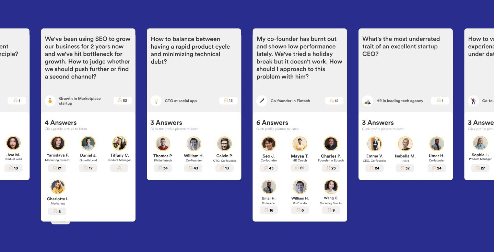
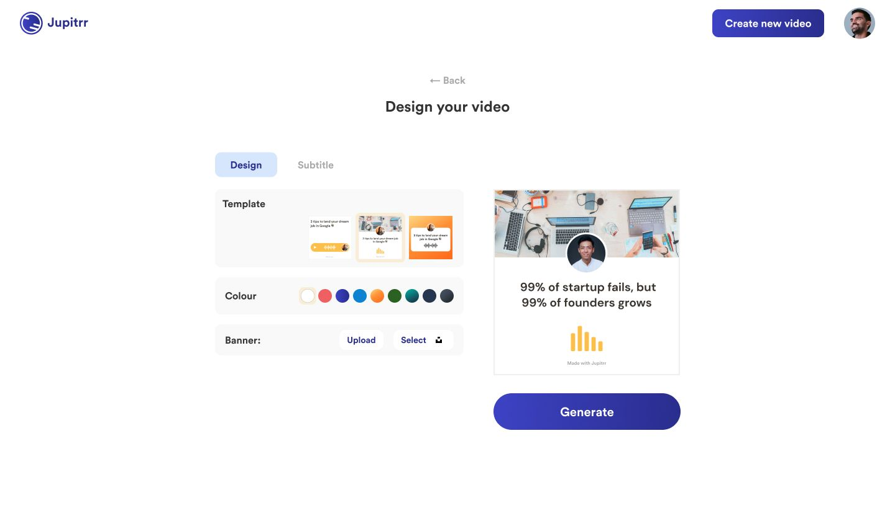
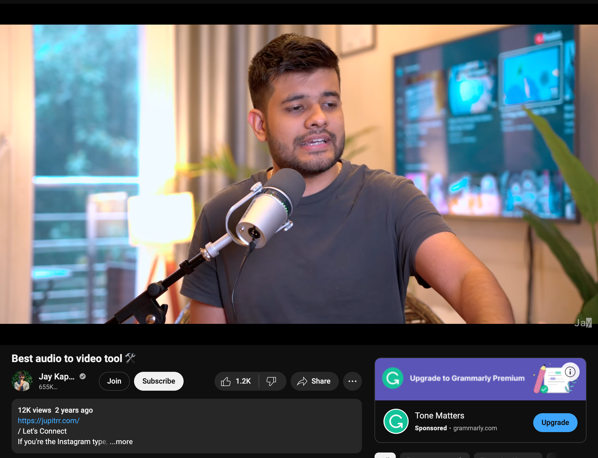
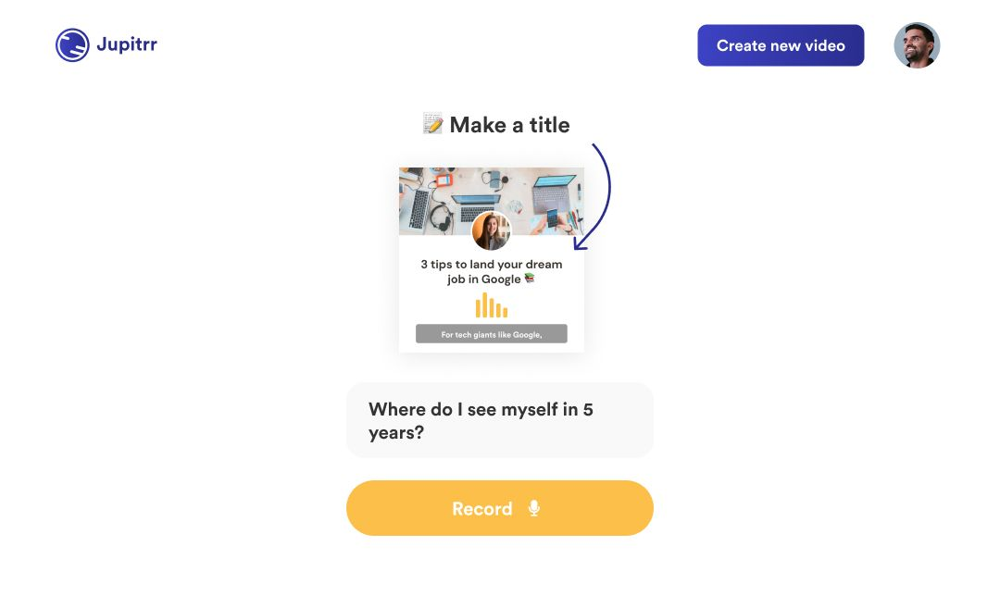

Mar 22, 2022
6 months learning - building an audiogram tool
Learning how to ship fast.
The Messy Beginning
There was a time we didn’t know what to do. To be precise, it was May 2021. I was traveling from the lockdown London back to Hong Kong with all the quarantine mess. The whole world was a mess and so do we.
After working for almost a year on networking, we were left with an ugly truth. There are nothing worth being solved in networking - human relationship are fundamentally complicated, while networking is a fairly vague term. Don’t want to put too much emphasis on this cause this blog is not about this. Anyway, for the context, we want to make the pivot.
The Audio Idea
We were thinking a lot of different stuff and something caught our attention - audio and non-googleable insight. We figured this world would probably be great with something like Quroa in audio. People answering each other question using their engaging and authentic voice. But wait, we’ve been there, you know that if we want to build a new social platform we have to solve the chicken and egg problem — creators comes for audience and audience comes for creators. It won’t make sense without each other.

Our Hack
The way we wanted to navigate through this challenge was the “come for the tool, stay for the people” method. We want to build a tool that content creators can easily create and share to their audience on their own way. A typical use case we imagined was a career coach and sign up a profile on Jupitrr website and take it as an Ask Me Anything portal for their audience - received question and record answers in audio.
First iteration
We brought this idea to many content creators, career coaches and we realised that audio isn’t really a popular option as content format. Yes, they understand that making content with audio recording is undoubtably fast and easy. But they also concern, is their audience going to adopt to audio-only content. This guided our big iteration from just create audio to creation audio content and export it as video which becomes an audiogram tool. We went a bit more in-depth to figure out what feature our target users want like subtitle transcription and video format etc. Then we started to build the tool.
Figuring out the MVP
At this point, our CEO started getting busy taking care of other business, I took up the role of Product Manager and work closely with my CTO and our talented developer to build this new version of Jupitrr. Being in an early-stage startup, building the MVP is not the hardest part - figure out what not to build is. After previous building experience, I’m pretty clear this time that we need to build something that focus on delivering value to users. Any that’s not directly related to users’ value, I cut it off. I would say this is very counter-intuitive as a designer and it was a bit hard for me to switch the mindset.
Within a few weeks, I made it through and decide the right amount of features that’s enough to validate the idea and put the deadline to launch before the year ends. At the point, we were already 6-7 months in without any significant output, which doesn’t help much with the moral.

Launching
Fast forward to launch-day, the end of Nov. We made the tool without any major bugs. We had 3 video templates and we will transcript the subtitle and put it on the video. We don’t have any customisation, no editing on transcripts and you can’t even logout and delete your account. But turns out, it’s the right amount of the effort to deliver the value to our users.
We launched on Product Hunt, didn’t do particularly well on a very competitive day. But we managed to get over 350 upvotes and over 200 signs up. We’re happily receiving early feedback. A week later, we got reshared by a Indian Youtuber - he made a 2-min youtube about us. That sinked it 2000 users for us on that week. At that point, we had more and more users coming in, trying out and telling us what to build. Features including more templates, adding their own image, editing their audio transcripts, we listened and stay a close feedback loop with our users through our chat bot, hotjar and looking through every video generated on Jupitrr.

Optimising with Data
After 2 months of productive building, it’s time for some iterating and optimising. We looked into the tracking, organised our data into information where we tried to find out more about people’s behaviour using Jupitrr. First significant insight we found was the drop off rate in the conversion funnel - there were too many steps in the funnel and the stats did not look amazing in between. Combined that with qualitative research, we realised a lot of people either trying to skip the title input for the video, or put “test” instead. That’s why the first iteration was to put that away and ask for it only in the video editing stage. We also shorten the onboarding journey by taking away the “guide” page and make use of some toast alerts instead.
The change resulted in slight increase in the conversion rate by around 3-5% and we never see any “testing” on our database anymore which makes our easier for us to identify real active users.

Does it work for our coming for the tool, stay for the people idea?
We don’t know about the question about this answer yet. But we feel short towards this idea. We were imagining to attract some high quality content creators from the tool, but we believe that those find us too basic of a tool and doesn’t convert well. We did attract a lot of beginner creators, content marketers, but the idea to attract high quality content creators? We got to admit there wasn’t a lot.
Lee
Mar 22, 2022 - originally posted on Medium